---
title: New in Simple DNS Plus v. 5.0 - Options
category: 17
frontpage: false
comments: true
refs: 95
created-utc: 2019-01-01
modified-utc: 2019-01-01
---
In v. 5.0 we have moved some options around, added many new ones, and also retired a few.
In previous versions, we tried to make the Options dialog simpler by hiding some of the lesser used "advanced options" in the "sdnsplus.ini" file. For version 5.0 however, we decided that ALL options should be available directly from the Options dialog.
While this does result in a more choices in the Options dialog, we think that it is easier for users to have everything in one place.
Inbound DNS Requests
- Now possible to specify the port number to listen for DNS requests on (previously advanced option "DNSListenPort").
Other DNS servers and client expect to find your DNS server on port 53 - but it can be useful to use a different port number for example in combination port mapping on a firewall/NAT router.
- Now possible to listen for DNS requests on IPv6 addresses.
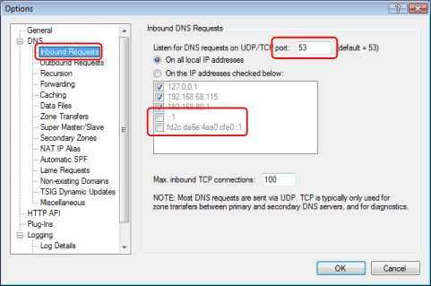
Outbound DNS Requests
- NEW: Possible to send outbound requests from IPv4 and/or IPv6 addresses and specify preference for resolving.
- NEW: Possible to specify from-ip-address for outbound DNS and zone transfer requests.
This is especially useful for multi-homed servers - for example a secondary server which is only allowed to request zone transfers from a specific IP address.
- NEW: Possible to specify from-port number for outbound DNS requests.
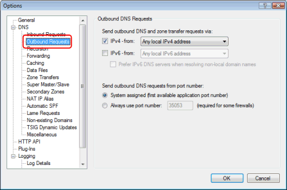
DNS Forwarding
- NEW: "Shadow Forwarding" = forward if no matching record is found in local zones.
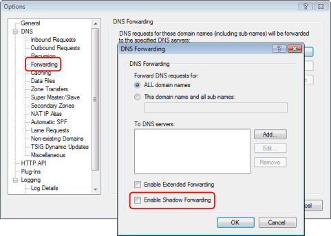
Caching
- Now possible to specify minimum cache time (advanced option in v. 4.00):
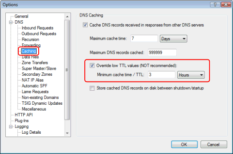
DNS Data Files
To comply with Windows logo certification requirements, the default location for the data files (zone files) is now
"%ProgramData%\JH Software\Simple DNS Plus\ZoneFiles", but you can of course still configure this to any location you like.
- NEW: The "Defer loading..." option now also works with secondary zones.
- Possible to specify minimum TTL value for records loaded from zone files (previously advanced option "PermTTLMin").
Also notice that the "Hosts file" options are gone. This will be handled by the optional Hosts File plug-in instead.
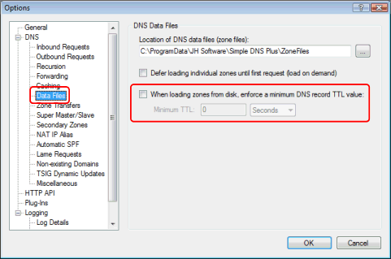
Zone Transfers
- NEW: "Send only one DNS record per message" option. Version 5.0 will by default send multiple DNS records in each DNS message which is much more efficient. This option allows for older BIND secondaries which do not support multi-record messages in zone transfers.
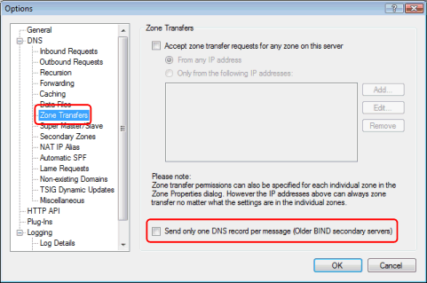
Super Master/Slave
To some users coming from other DNS server products, "master/slave" means the same as "primary/secondary",.
So to avoid any confusion, we have renamed the "Master/Slave" feature "Super Master/Slave".
Despite the new name, it is still fully compatible with "Master/Slave" in previous versions of Simple DNS Plus.
- NEW: "Verify zone list from masters every" option - allows for a full synchronization at specified interval. This can be useful with very large zone lists where you want to disable NOTIFY requests (see Miscellaneous section) and enforce a high minimum SOA-record refresh (see Secondary Zones section) to minimize network traffic between master/slave servers.
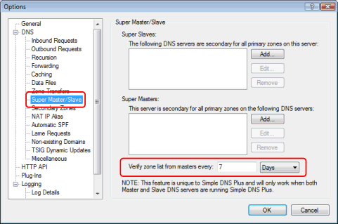
Secondary Zones
- NEW: "Max. refresh / IXFR requests to send per second" option can help limit network traffic and load on primary server when many zones need to be refreshed at the same time, for example at startup after longer down period.
- NEW: "Maximum parallel zone transfers" option. Secondary zones with different primary servers can now be transferred in parallel.
- NEW: "Retry transferring expired zones every" option.
- "Use incremental zone transfers (IXFR)" was previously advanced option "UseIXFR".
- "Enforce minimum values for secondary zone SOA records" was previously advanced options "MinimumRefresh/Retry/Expire".
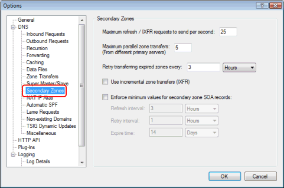
Automatic SPF Records
Automatic SPF Records now has its own section - previously in the "Security" section.
- NEW: "SPF Record TTL" option.
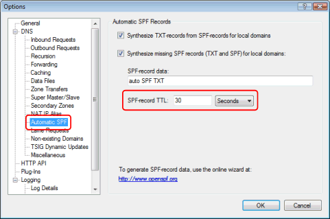
Lame DNS Requests
"Lame DNS Requests" now have a name, and its own section - previously in the "Recursion" section.
- NEW: Can now also synthesize AAAA-records.
- The "Additional TXT-record" was previously advanced option "NraNaaTXT".
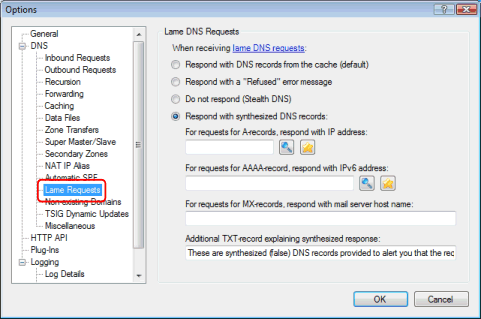
Non-existing Domains
"Non-existing Domains" now has its own section - previously "NXDOMAIN Redirect" in the "Records" section.
- NEW: Can now also redirect IPv6 / AAAA requests.
- The "Additional TXT-record" was previously advanced option "NXDomTXT".
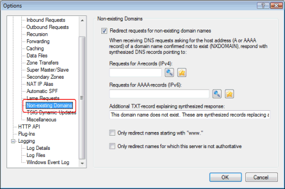
TSIG Dynamic Updates
In previous versions this was a separate dialog available from the DNS Records window / Tools menu.
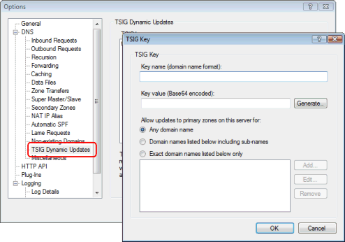
Miscellaneous DNS Settings
or we might have called it the "kitchen sink" :-) This stuff really doesn't group logically with anything else.
- NEW: "Synthesize empty reverse zones..." - see draft-ietf-dnsop-default-local-zones
- NEW: "Only accept DNS responses from the IP address that request was sent to" - can help prevent DNS spoofing.
- "Keep the root server list..." previously advanced option "AutoUpdateRoot".
- NEW: "Specify EDNS0 UDP payload size" - fit more data in DNS packets over UDP.
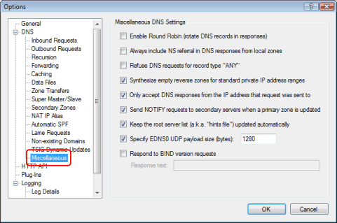
Plug-Ins
For details click here...
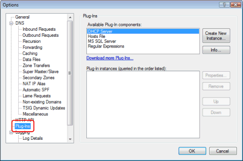
Log Details
- NEW: Include EDNS0 details (UDP payload size)
- NEW: Log internationalized domain names (IDNs) in native characters (log files are UTF8 encoded).
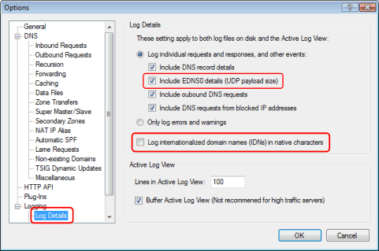